import torch
import torch.nn as nn
class TransformerEncoder(nn.Module):
def __init__(self, embed_dim, num_heads, ff_dim, rate=0.1):
super().__init__()
self.multi_head_attention = nn.MultiheadAttention(embed_dim, num_heads, batch_first=True)
self.feed_forward_net = nn.Sequential(nn.Linear(embed_dim, ff_dim), nn.ReLU(), nn.Linear(ff_dim, embed_dim))
self.layer_normalization1 = nn.LayerNorm(embed_dim, eps=1e-6)
self.layer_normalization2 = nn.LayerNorm(embed_dim, eps=1e-6)
self.dropout1 = nn.Dropout(rate)
self.dropout2 = nn.Dropout(rate)
def forward(self, inputs):
multi_head_att_output, _ = self.multi_head_attention(inputs, inputs, inputs)
multi_head_att_dropout = self.dropout1(multi_head_att_output)
add_norm_output_1 = self.layer_normalization1(inputs + multi_head_att_dropout)
feed_forward_output = self.feed_forward_net(add_norm_output_1)
feed_forward_dropout = self.dropout2(feed_forward_output)
add_norm_output_2 = self.layer_normalization2(add_norm_output_1 + feed_forward_dropout)
return add_norm_output_2Lecture 19 - Transformer Networks


- 19.1 Introduction to Transformers
- 19.2 Self-attention Mechanism
- 19.3 Multi-head Attention
- 19.4 Encoder Block
- 19.5 Positional Encoding
- 19.6 Using a Transformer Model for Classification
- 19.7 Decoder Sub-network
- 19.8 Vision Transformers
- References
19.1 Introduction to Transformers
Transformer Networks, or simply Transformers, are a neural network architecture introduced in 2017 in the now-famous paper “Attention is All You Need”. The title refers to the attention mechanism, which forms the basis for data processing in Transformers.
Transformer networks have become the predominant type of deep learning models for NLP in recent years. They have replaced Recurrent Neural Networks (RNNs) in nearly all NLP tasks, and all Large Language Models (LLMs) today employ the Transformer architecture. Furthermore, Transformer models have been successfully adapted for many other tasks, including image and video processing, protein and DNA sequence prediction, time-series forecasting, and reinforcement learning. Consequently, Transformers are currently considered the most influential Neural Network architecture.
19.2 Self-attention Mechanism
The self-attention mechanism in NNs enables a model to focus on the most relevant parts of the input data when making predictions. In NLP, self-attention is used to identify which words in a sentence are important for understanding the meaning of a given query word. That is, the model learns to pay more attention to relevant words in sentences, and less attention to other words that are less relevant for a given task.
In the following two sentences, in the left subfigure the word “it” refers to “street”, while in the right subfigure the word “it” refers to “animal”. Understanding the relationships between the words in such sentences has been challenging with traditional NLP approaches. Transformers overcome this by using the self-attention mechanism to model the relationships between all words in a sentence, and assign weights to other words in sentences based on their importance. In the left subfigure, the mechanism estimated that the query word “it” is most related to the word “street”, but the word “it” is also somewhat related to the words “The” and “animal”. These words are referred to as key words for the query word “it”. The intensity of the lines connecting the words, as well as the intensity of the blue color, signifies the attention scores (i.e., weights). The wider and darker the lines, the higher the attention scores between two words are.
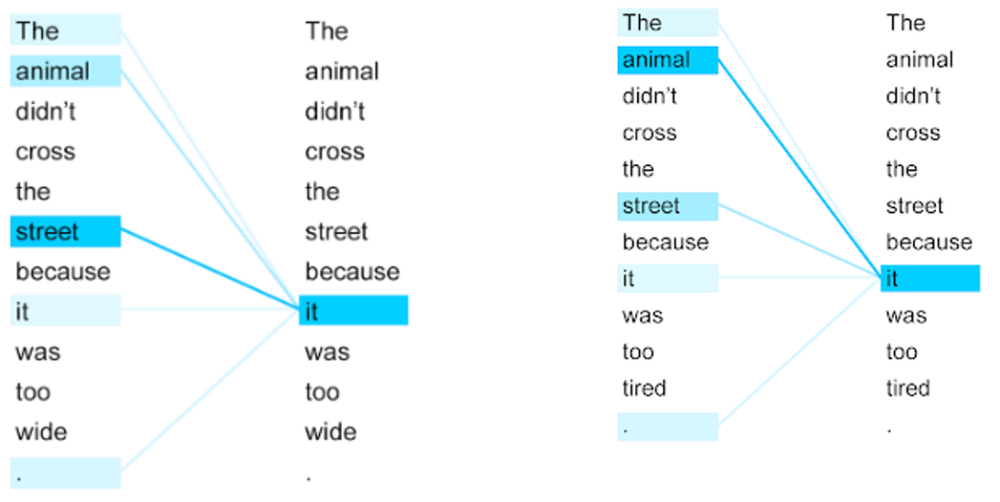
Figure: Attention to words in sentences.
Specifically, Transformer Networks compare each word to every other word in the sentence, and calculate attention scores. This is shown in the next figure, where for example, the word “caves” has the highest attention scores for the words “glacier” and “formed”. The attention scores between two words are calculated as the dot product (i.e., inner product) of their vector representations. For a Query vector \(Q\) and a Key vector \(K\), the attention score is the dot product of the vectors: \({\text{Attention score}} = Q \cdot K\).
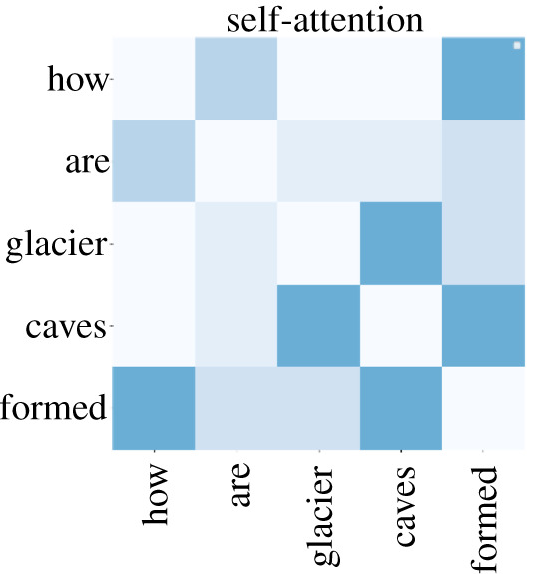
Figure: Attention scores.
Transformers employ word embeddings to represent individual words as vectors in a continuous space. Recall from the previous lectures that word embeddings are vector representations, such that the vectors of words that have similar semantic meaning have close spatial positions in the embeddings space. Therefore, attention scores are calculated as dot products of the embedding vectors for each pair of words in sentences.
The obtained attention scores for each word are then first scaled (by dividing the values with \(\sqrt d\)) and afterward are normalized to be in the [0,1] range (by applying a softmax function). That is, the attention scores are calculated as \(a_{ij}=softmax(\frac{Q_i\cdot K_j}{\sqrt d})\), where \(d\) is the dimensionality of the embedding vectors. As discussed in previous lectures, the dimensionality of embedding vectors in modern Large Language Models typically ranges from 2,048 to 7,168 dimensions. Scaling the values by \(\sqrt d\) is helpful for improving the flow of the gradients during training. Softmax produces scores that sum to 1 for each query, i.e., a probability distribution over keys.
The resulting scaled and normalized attention scores are then multiplied with the initial representation of the words, which in the self-attention module is referred to as value or \(V\). This is shown in the next figure. The left subfigure shows the attention scores calculated as product of the input representations of the words \(Q\) and \(K\), which are afterwards multiplied with the input representation \(V\) to obtain the output of the self-attention module. Note that for text classification, all three terms Query, Key, and Value originate from the input representation of the words in sentences. However, the original Transformer was developed for machine translation, where the words in the target language are queries, and the words in the source language are pairs of keys and values. This terminology is also related to search engines, which compare queries to keys, and return values (e.g., the user submits a query, the search engine identifies key words within the query to search for, and it returns the results of the search as values). Self-attention works in a similar way, where each query word is matched to other key words, and a weighted value is returned.
The right subfigure below shows how self-attention is implemented in Transformer Networks. Namely, Matmul stands for a matrix multiplication layer which calculates the dot product \(Q\cdot K\), which is afterwards scaled by \(\sqrt d\), then there is an optional masking layer, and afterward the final attention scores are obtained by passing it through a Softmax layer to obtain \(softmax(\frac{Q_i\cdot K_j}{\sqrt d})\). Finally, the attention scores are multiplied with \(V\) via another matrix multiplication layer Matmul to calculate the output of the self-attention module. The optional masking layer can be used for two purposes: (a) to set the attention scores for future tokens to zero, so that the model can only attend to previous tokens, as explained in the section below on decoder sub-networks; and (b) to ensure that attention scores are not calculated for the padding tokens in padded sequences (e.g., 0 is often used as the padding token), but instead are calculated only for the positions in input sequences that have actual words in padded sequences.
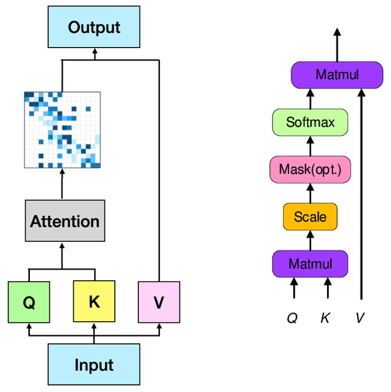
Figure: Self-attention in Transformer Networks
In conclusion, self-attention enables the Transformer to capture the context-dependent meaning of each word by relating it to all others in the sequence. Through training, the model learns refined contextual embeddings that represent not just the word itself, but its role and meaning within the surrounding text.
19.3 Multi-head Attention
Transformer Networks include multiple self-attention modules in their architecture. Each self-attention module is called an attention head, and the aggregation of the outputs of multiple attention heads is called multi-head attention. For instance, the original Transformer model had 8 attention heads, while LLaMA 3 language model has 32 attention heads.
The multi-head attention module is shown in the next figure, where the inputs are first passed through a linear layer (i.e., fully-connected dense layer), next they are fed to the multiple attention heads, and the outputs of all attention heads are concatenated, and passed through one more linear layer.
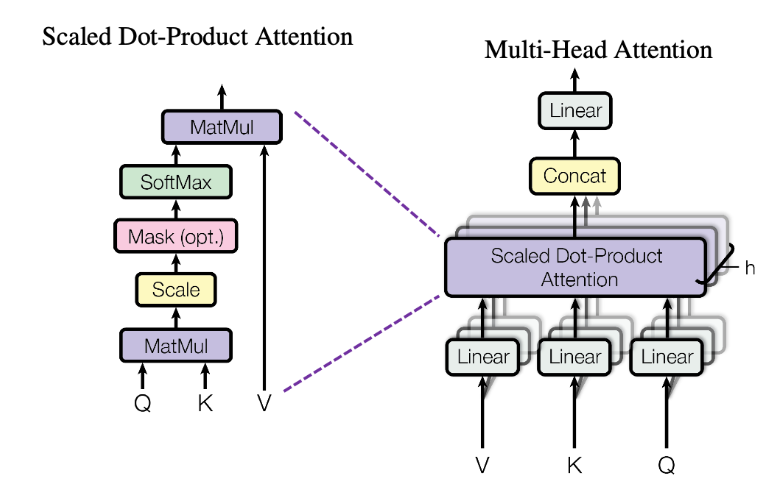
Figure: Multi-head attention
The following figure provides another visualization of single-head and multi-head attention. The keys, queries, and values are obtained by multiplying the word embeddings with the matrices \(W_k\), \(W_q\), and \(W_v\), respectively. These operations correspond to the linear layers shown in the figure above. They are implemented using the nn.Linear layer in PyTorch, that is, they are fully connected (dense) layers without activation functions. In the single-head attention subfigure, the attention scores are multiplied by the value vectors and passed to the next layer. In the multi-head attention subfigure, the outputs from multiple attention heads are concatenated and passed through another linear layer, whose matrix is typically denoted \(W_o\) (the output projection matrix). The matrices \(W_k\), \(W_q\), \(W_v\), and \(W_o\) contain the trainable parameters that are learned during model training.
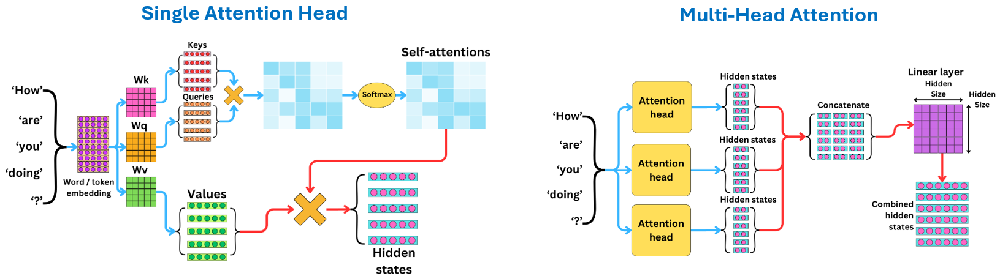
Figure: Single head and multi-head attention
A logical question one may ask is: Why are multiple attention heads needed? The reason is that multiple attention heads can learn different relationships between words in sentences. Each head can extract context independently from the other heads, allowing the model to capture diverse and subtle dependencies that a single head might miss. For example, one head may capture relationship between nouns and numerical values in sentences, another head may focus on the relationship between the adjectives in sentences, and another head may focus on rhyming words, etc. And, if one head becomes too specialized in capturing one type of patterns, the other heads can compensate for it and provide redundancy that can improve the overall performance of the model.
In addition, the computations of different attention heads can be performed in parallel on different workers, which enables faster training and allows the model to scale efficiently to larger architectures.
19.4 Encoder Block
The Encoder Block in Transformer Networks is shown in the next figure. It processes the input word embeddings and extracts representations of text data that can afterwards be used for different NLP tasks.
The components in the Encoder Block are:
- Multi-Head Self-Attention layer, which as explained, consists of multiple self-attention modules.
- Dropout layer, is a regular dropout layer.
- Residual connections, are skip connections in neural networks, where the input to a layer is added to the processed output of the layer. Residual connections were popularized in ResNet models, as they were shown to stabilize the training and mitigate the problems of vanishing and exploding gradients in neural networks (i.e., they refer to cases when the gradients become too small or too large during training). In the figure, the
Addterm in the layer refers to the residual connection, which adds the input embeddings to the output of the Dropout layer. - Layer Normalization, is similar in concept to batch normalization in CNNs, but instead of normalizing across the batch dimension, it normalizes the hidden features of each token independently. Similar to batch normalization, it scales the data to have zero mean and unit variance. Layer normalization is applied within each sublayer in the multi-head attention and feed-forward layers, and it stabilizes the training and improves gradient flow. The “Norm” label in the Transformer diagrams refers to the Layer Normalization operation.
- Feed Forward network, consists of 2 fully-connected (dense) layers that extract useful data representations.
- The Encoder Block also contains one more Dropout layer, and another Add & Norm layer that forms a residual connection for the input to the Feed Forward network and applies a layer normalization operation.
Transformer networks typically include several such encoder blocks in a sequence. For instance, in the original paper, the authors used 6 encoder blocks.
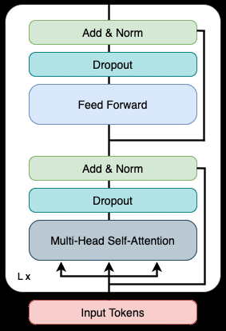
Figure: Encoder block
The implementation of the Encoder Block in PyTorch is shown in the cell below following the imported libraries.
The Encoder Block is implemented as a subclass of nn.Module. The __init__() constructor method lists the definitions of the layers in the Encoder, and the method forward() provides the forward pass through the layers.
- Multi-head attention layer is implemented in PyTorch as
nn.MultiheadAttention. The arguments in the layer are:embed_dimis the dimension of the embeddings of the input tokens, andnum_headsis the number of attention heads. PyTorch splits the embedding vectors among the heads, i.e., each head works with vectors of sizeembed_dim / num_heads, and thereforeembed_dimmust be divisible bynum_heads. The argumentbatch_first=Trueindicates that the first dimension of the inputs is the batch dimension, i.e., the inputs have the shape (batch, sequence length, embedding dimension). - Dropout and Normalization layers are also directly available as
nn.Dropoutandnn.LayerNorm, with argumentsratefor the dropout rate, andepsis a small float added to the standard deviation to avoid division by 0. - Feed forward network includes 2 linear layers with a ReLU activation in between, with the number of neurons set to
ff_dimandembed_dim, respectively.
The forward() method specifies the forward pass of the network. Note that the multi_head_attention layer has as arguments the inputs three times, which are used as the query, the key, and the value in the self-attention. The layer returns two outputs: the output of the attention module and the attention scores, and we only use the first output. Also note the residual connections that are implemented in the layer normalization, e.g., the inputs are added to the output of the multi-head attention.
19.5 Positional Encoding
We mentioned that Transformers use token/words embeddings as inputs, however, the embeddings alone don’t provide information about the order of words in sentences. Understandably, the order of the words in a sentence is important, and different order of the words can convey a different meaning. To provide such information, Transformer Network introduces positional encoding for each token that is added to the input embedding, as shown in the next figure. Positional encoding vectors have the same dimensionality as the input embedding vectors, and they are designed in such way so that the difference in values between any two positions reflects their distance in the input sequence.
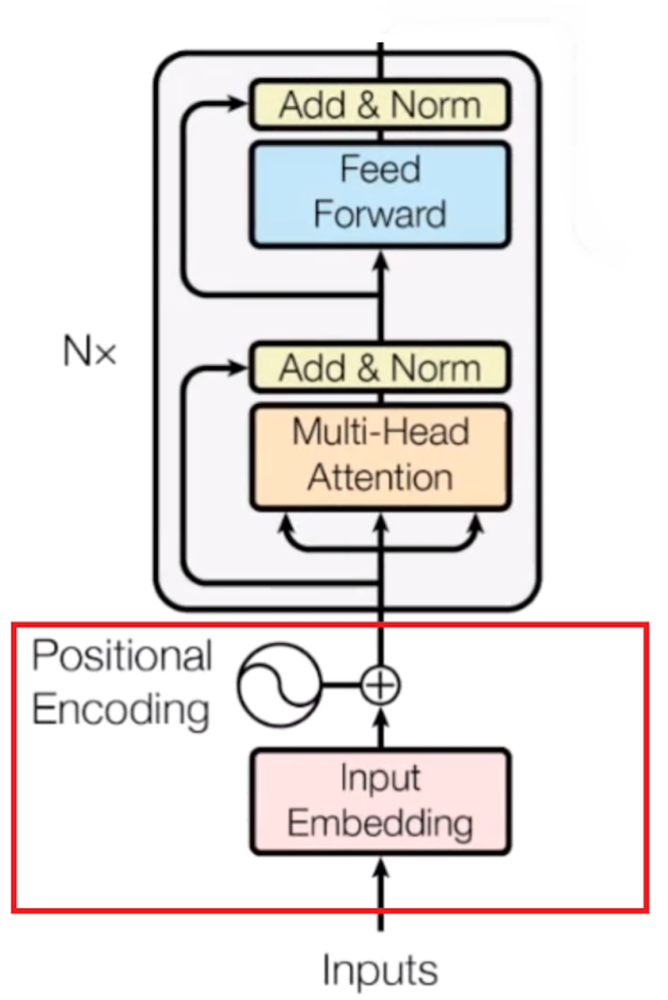
Figure: Positional encoding
There are several different ways to implement positional encoding.
- Fixed (sinusoidal) positional encodings: In the original Transformer paper, the authors used a combination of sine and cosine functions of different frequencies to generate position vectors. These encodings are designed so that each position in the sequence is uniquely represented by a distinct pattern of sine and cosine values. The values are scaled to be in the range from -1 to 1, ensuring that the model can handle different sequence lengths.
- Learned positional encodings: Another common approach is to let the model learn positional embeddings directly during training, similar to how it learns word embeddings. In this case, instead of computing positions using a fixed mathematical formula, the model learns a separate encoding vector for each position, enabling it to adapt positional representations to the specific task and data.
- Rotary positional encodings (RoPE): Unlike the fixed and learned positional encodings techniques that encode information for each token based on the absolute position of the token in a sequence, the RoPE technique introduces the positional information based on the relative distance of tokens in the sequence. This results in positional encoding values that are reduced for tokens that are distant from one another in the sequence. As well as, instead of adding the positional encoding vectors to token embeddings as in the above figure, RoPE introduces the positional information directly into the self-attention mechanism of Transformer networks. Specifically, RoPE applies a unique rotation angle to each position in the sequence, and inserts a multiplicative term based on the rotation angle directly into the dot product of query and key vectors \(Q_i\cdot K_j\) of the self-attention mechanism \(a_{ij}=softmax(\frac{Q_i\cdot K_j}{\sqrt d})\). Such relative positional encodings make RoPE scalable to longer sequences and allow capturing relative distances between tokens more naturally than fixed and learned positional encodings. Consequently, RoPE is widely used for positional encoding in many modern LLMs.
The following cell implements the addition of learned positional encoding to word embeddings in PyTorch. For both token and positional embedding vectors we will use the nn.Embedding layer in PyTorch, which maps each token index to a trainable vector. The arguments in the nn.Embedding layer are the number of embedding vectors and the dimension of the embedding vectors. For the token embeddings layer, the number of vectors is the size of the vocabulary (vocab_size below), whereas for the positional embeddings layer it is the maximum length of the text sequences (maxlen below), i.e., there is one embedding vector for each position in the sequence.
In the forward method, the function torch.arange creates the positions 0, 1, 2, …, up to the length of the input sequences (similar to NumPy’s arange). Next, the two separate nn.Embedding layers are called, and returned is the sum of the token and positional embeddings.
class TokenAndPositionEmbedding(nn.Module):
def __init__(self, maxlen, vocab_size, embed_dim):
super().__init__()
self.token_embeddings = nn.Embedding(vocab_size, embed_dim)
self.positional_embeddings = nn.Embedding(maxlen, embed_dim)
def forward(self, inputs):
positions = torch.arange(inputs.shape[1], device=inputs.device)
position_embeddings = self.positional_embeddings(positions)
input_embeddings = self.token_embeddings(inputs)
return input_embeddings + position_embeddings19.6 Using a Transformer Model for Classification
19.6.1 Model Definition
We will now employ the layers that we defined above, to create a Transformer model for text classification.
It is a simple model that consists of the following parts:
- Encoder, which includes the
TokenAndPositionEmbeddinglayer, and theTransformerEncoderlayer. - Classifier, which consists of global average pooling, and two
DropoutandLinearlayers. Global average pooling calculates the average of the embedding vectors of all tokens in a sequence, to produce a single fixed-size vector per sample, and it passes those values to the linear layers to classify the text sequences. It is implemented with themean()method over the dimension of the tokens (dim=1).
The model will be used to classify movie reviews as negative or positive, therefore the last layer has 2 outputs (num_classes=2).
class TransformerClassifier(nn.Module):
def __init__(self, maxlen, vocab_size, embed_dim, num_heads, ff_dim, num_classes):
super().__init__()
# encoder
self.embedding = TokenAndPositionEmbedding(maxlen, vocab_size, embed_dim)
self.encoder = TransformerEncoder(embed_dim, num_heads, ff_dim)
# classifier
self.classifier = nn.Sequential(
nn.Dropout(0.1),
nn.Linear(embed_dim, 100),
nn.ReLU(),
nn.Dropout(0.1),
nn.Linear(100, num_classes))
def forward(self, inputs):
x = self.embedding(inputs)
x = self.encoder(x)
x = x.mean(dim=1) # global average pooling over the tokens
return self.classifier(x)Next, we set the parameters of the model and create the model. The input sequences will be tokenized with the DistilBERT tokenizer from Lecture 18, and therefore the size of the vocabulary is set to the vocabulary size of that tokenizer (30,522 tokens). The maximum length of the input sequences for the movie reviews is set to 256 tokens. The function torch.manual_seed() makes the random initialization of the model parameters reproducible.
maxlen = 256 # Maximum length of input sequences is 256 tokens
embed_dim = 32 # Embedding size for each token
num_heads = 2 # Number of attention heads
ff_dim = 32 # Layer size in the feed forward network inside transformer
vocab_size = 30522 # The size of the vocabulary of the DistilBERT tokenizer
num_classes = 2 # Number of classes (negative and positive reviews)
torch.manual_seed(0)
model = TransformerClassifier(maxlen, vocab_size, embed_dim, num_heads, ff_dim, num_classes)The structure and the number of parameters of the model are shown below.
print(model)
print("Number of parameters:", sum(p.numel() for p in model.parameters()))TransformerClassifier(
(embedding): TokenAndPositionEmbedding(
(token_embeddings): Embedding(30522, 32)
(positional_embeddings): Embedding(256, 32)
)
(encoder): TransformerEncoder(
(multi_head_attention): MultiheadAttention(
(out_proj): NonDynamicallyQuantizableLinear(in_features=32, out_features=32, bias=True)
)
(feed_forward_net): Sequential(
(0): Linear(in_features=32, out_features=32, bias=True)
(1): ReLU()
(2): Linear(in_features=32, out_features=32, bias=True)
)
(layer_normalization1): LayerNorm((32,), eps=1e-06, elementwise_affine=True)
(layer_normalization2): LayerNorm((32,), eps=1e-06, elementwise_affine=True)
(dropout1): Dropout(p=0.1, inplace=False)
(dropout2): Dropout(p=0.1, inplace=False)
)
(classifier): Sequential(
(0): Dropout(p=0.1, inplace=False)
(1): Linear(in_features=32, out_features=100, bias=True)
(2): ReLU()
(3): Dropout(p=0.1, inplace=False)
(4): Linear(in_features=100, out_features=2, bias=True)
)
)
Number of parameters: 99486219.6.2 Loading the Dataset
Let’s apply the model for sentiment classification of movie reviews in the IMDB dataset. The dataset contains 50,000 movie reviews from the Internet Movie Database (IMDB), which are labeled as negative or positive. The reviews are split into 25,000 training and 25,000 test reviews, and each set contains an equal number of negative and positive reviews.
We will use the function load_dataset() from the Hugging Face datasets library to download the dataset from the Hub by its name.
from datasets import load_dataset
imdb = load_dataset("stanfordnlp/imdb")imdbDatasetDict({
train: Dataset({
features: ['text', 'label'],
num_rows: 25000
})
test: Dataset({
features: ['text', 'label'],
num_rows: 25000
})
unsupervised: Dataset({
features: ['text', 'label'],
num_rows: 50000
})
})We can see that imdb is a DatasetDict object with three sets: train, test, and unsupervised. The unsupervised set contains 50,000 additional reviews without labels, and we will not use it.
The dataset does not have a validation set, and therefore we will create one by using the train_test_split() method to randomly select 5,000 reviews from the training set for validation. The remaining 20,000 reviews will be used for training. The argument seed makes the random split reproducible.
train_val = imdb["train"].train_test_split(test_size=5000, seed=0)
imdb["train"] = train_val["train"]
imdb["validation"] = train_val["test"]
del imdb["unsupervised"]
imdbDatasetDict({
train: Dataset({
features: ['text', 'label'],
num_rows: 20000
})
test: Dataset({
features: ['text', 'label'],
num_rows: 25000
})
validation: Dataset({
features: ['text', 'label'],
num_rows: 5000
})
})imdb["train"][0]{'text': 'The movie was TERRIBLE!!! Easily the worst movie I have seen in the past few years. One of those movies I will be able to tell people for the next three years that it was the worst movie I can think of. Thank you for giving me an answer to that burning question "What is the worst movie you have seen?" Answer: Celestine Prophecy. Trust me...I read the book, enjoyed the message and was excited to see the movie, but then, they treated the audience like we are r*tarded. There is no story and the story that is there is crippled by too much magic and coincidence. It is too bad they have to spell out the nine prophecies and can\'t simply weave them into a story that is entertaining to follow. They didn\'t spend any time on character development and it was easy to not care if any character died. It was embarrassing to be one of the few people who stuck around until the end of this incredibly boring movie. The book is pretty boring too but I enjoyed the parallels that could be seen in everyday life while you read the book. The film does not offer the same opportunity and I would suggest not seeing it if you want to continue to hold the words of the book close to your heart. DON\'T SEE THIS MOVIE. Trust me.',
'label': 0}The labels are integers 0 and 1, and the names of the corresponding classes can be obtained from the features attribute of the dataset, i.e., 0 is neg (negative review), and 1 is pos (positive review).
class_names = imdb["train"].features["label"].names
class_names['neg', 'pos']Next, we will use the DistilBERT tokenizer to convert the text into sequences of token indices. We define a function tokenize_padded() and apply it to the dataset with the map() method. The reviews are padded (or truncated) to the same length of 256 tokens with padding="max_length", which is required by our model, since the positional embeddings layer has 256 positions. Note that many reviews are longer than 256 tokens, and only the first 256 tokens of such reviews will be used by the model.
The set_format("torch", ...) method of the dataset returns the selected columns as PyTorch tensors, and a Hugging Face Dataset can be passed directly to a PyTorch DataLoader to iterate over the data in batches. The training data is shuffled at each epoch.
from transformers import AutoTokenizer
from torch.utils.data import DataLoader
tokenizer = AutoTokenizer.from_pretrained("distilbert-base-uncased")
# Tokenize the reviews with padding to a fixed length of 256 tokens
def tokenize_padded(rows):
return tokenizer(rows["text"], truncation=True, padding="max_length", max_length=256)
padded_imdb = imdb.map(tokenize_padded, batched=True)
padded_imdb.set_format("torch", columns=["input_ids", "attention_mask", "label"])
train_dataloader = DataLoader(padded_imdb["train"], shuffle=True, batch_size=128)
val_dataloader = DataLoader(padded_imdb["validation"], shuffle=False, batch_size=256)
test_dataloader = DataLoader(padded_imdb["test"], shuffle=False, batch_size=256)19.6.3 Model Training
The model is trained with the standard PyTorch training loop, implemented in the function train(). For each batch, we perform a forward pass, calculate the cross-entropy loss, perform a backward pass, and update the parameters with the Adam optimizer. The function returns the training loss and accuracy for one epoch. After each epoch, the accuracy on the validation set is calculated with the function evaluate().
device = torch.device("cuda" if torch.cuda.is_available() else "cpu")
model.to(device)
criterion = nn.CrossEntropyLoss()
optimizer = torch.optim.Adam(model.parameters(), lr=1e-3)
def train(model, dataloader):
model.train()
running_loss, correct, total = 0.0, 0, 0
for batch in dataloader:
input_ids = batch["input_ids"].to(device)
labels = batch["label"].to(device)
optimizer.zero_grad() # reset the gradients
outputs = model(input_ids) # forward pass
loss = criterion(outputs, labels) # loss calculation
loss.backward() # backward pass
optimizer.step() # parameters update
running_loss += loss.item() * labels.size(0)
correct += (outputs.argmax(dim=1) == labels).sum().item()
total += labels.size(0)
return running_loss / total, correct / total
def evaluate(model, dataloader):
model.eval()
correct, total = 0, 0
with torch.no_grad():
for batch in dataloader:
input_ids = batch["input_ids"].to(device)
labels = batch["label"].to(device)
outputs = model(input_ids)
correct += (outputs.argmax(dim=1) == labels).sum().item()
total += labels.size(0)
return correct / total
epoch_num = 10
for epoch in range(epoch_num):
train_loss, train_accuracy = train(model, train_dataloader)
val_accuracy = evaluate(model, val_dataloader)
print(f"Epoch {epoch+1}/{epoch_num} - loss: {train_loss:.4f} - accuracy: {train_accuracy:.4f} - val accuracy: {val_accuracy:.4f}")Epoch 1/10 - loss: 0.6662 - accuracy: 0.5759 - val accuracy: 0.6822
Epoch 2/10 - loss: 0.5273 - accuracy: 0.7390 - val accuracy: 0.7714
Epoch 3/10 - loss: 0.4215 - accuracy: 0.8107 - val accuracy: 0.7938
Epoch 4/10 - loss: 0.3596 - accuracy: 0.8474 - val accuracy: 0.8168
Epoch 5/10 - loss: 0.3065 - accuracy: 0.8766 - val accuracy: 0.8280
Epoch 6/10 - loss: 0.2679 - accuracy: 0.8967 - val accuracy: 0.8366
Epoch 7/10 - loss: 0.2332 - accuracy: 0.9136 - val accuracy: 0.8394
Epoch 8/10 - loss: 0.2005 - accuracy: 0.9276 - val accuracy: 0.8362
Epoch 9/10 - loss: 0.1755 - accuracy: 0.9408 - val accuracy: 0.8392
Epoch 10/10 - loss: 0.1424 - accuracy: 0.9557 - val accuracy: 0.8306The validation accuracy levels off at about 83% after 10 epochs. The training accuracy continues to increase, which indicates that training the model for more epochs would lead to overfitting.
19.6.4 Model Evaluation
The next cell evaluates the accuracy of the model on the test dataset, which is 80%. Note that our model has one small encoder block, it is trained from scratch on 20,000 reviews, and it only uses the first 256 tokens of each review. Fine-tuning a pretrained model such as DistilBERT that was pretrained on a large text corpus would typically achieve higher accuracy on this dataset.
test_accuracy = evaluate(model, test_dataloader)
print(f'Test Accuracy: {test_accuracy:.4f}')Test Accuracy: 0.8066Let’s also predict the class labels for two reviews in the test dataset (the reviews with indices 0 and 12500), and compare the predictions to the ground-truth labels.
# Make predictions for two test samples
test_samples = padded_imdb["test"][[0, 12500]]
model.eval()
with torch.no_grad():
outputs = model(test_samples["input_ids"].to(device))
print("Predicted labels:", outputs.argmax(dim=1).tolist())
print("True labels:", test_samples["label"].tolist())Predicted labels: [0, 1]
True labels: [0, 1]To see the text of the two reviews, we can convert the token indices back into text with the decode() method of the tokenizer. The argument skip_special_tokens=True removes the special tokens and the padding tokens. Note that the reviews longer than 256 tokens are truncated. The test set is sorted by label, and therefore the first review (index 0) is negative and the review with index 12,500 is positive. The model predicted both reviews correctly.
print(f"Review 0 ({class_names[test_samples['label'][0]]}):")
print(tokenizer.decode(test_samples["input_ids"][0], skip_special_tokens=True))Review 0 (neg):
i love sci - fi and am willing to put up with a lot. sci - fi movies / tv are usually underfunded, under - appreciated and misunderstood. i tried to like this, i really did, but it is to good tv sci - fi as babylon 5 is to star trek ( the original ). silly prosthetics, cheap cardboard sets, stilted dialogues, cg that doesn ' t match the background, and painfully one - dimensional characters cannot be overcome with a ' sci - fi ' setting. ( i ' m sure there are those of you out there who think babylon 5 is good sci - fi tv. it ' s not. it ' s cliched and uninspiring. ) while us viewers might like emotion and character development, sci - fi is a genre that does not take itself seriously ( cf. star trek ). it may treat important issues, yet not as a serious philosophy. it ' s really difficult to care about the characters here as they are not simply foolish, just missing a spark of life. their actions and reactions are wooden and predictable, often painful to watch. the makers of earth know it ' s rubbish as they have to always say " gene roddenberry ' s earth...print(f"Review 12500 ({class_names[padded_imdb['test'][12500]['label']]}):")
print(tokenizer.decode(padded_imdb["test"][12500]["input_ids"], skip_special_tokens=True))Review 12500 (pos):
previous reviewer claudio carvalho gave a much better recap of the film ' s plot details than i could. what i recall mostly is that it was just so beautiful, in every sense - emotionally, visually, editorially - just gorgeous. < br / > < br / > if you like movies that are wonderful to look at, and also have emotional content to which that beauty is relevant, i think you will be glad to have seen this extraordinary and unusual work of art. < br / > < br / > on a scale of 1 to 10, i ' d give it about an 8. 75. the only reason i shy away from 9 is that it is a mood piece. if you are in the mood for a really artistic, very romantic film, then it ' s a 10. i definitely think it ' s a must - see, but none of us can be in that mood all the time, so, overall, 8. 75.Let’s also consider one more example, where we will provide four short reviews that are not in the dataset, and we will obtain the predictions by the model.
sample_sentences = ["This movie was fantastic, I loved every minute of it!",
"The plot was boring and the acting was terrible.",
"A beautiful story with great performances by the whole cast.",
"I wasted two hours of my life watching this film."]
inputs = tokenizer(sample_sentences, padding="max_length", truncation=True, max_length=maxlen, return_tensors="pt")["input_ids"]
model.eval()
with torch.no_grad():
predictions = model(inputs.to(device)).argmax(dim=1)
for sentence, label in zip(sample_sentences, predictions):
print(f"{class_names[label]}: {sentence}")pos: This movie was fantastic, I loved every minute of it!
neg: The plot was boring and the acting was terrible.
pos: A beautiful story with great performances by the whole cast.
neg: I wasted two hours of my life watching this film.19.7 Decoder Sub-network
The Transformer Network in the original paper was designed for machine translation. Differently from the text classification task where for an input text sentence the model predicts a class label, in machine translation for an input text sentence in a source language the model predicts the corresponding text sentence in a target language. Therefore, both the input and output of the model are text sequences. These type of models are called sequence-to-sequence models, or oftentimes this term is abbreviated to seq2seq models. Beside machine translation, other NLP tasks that employ seq2seq models include question answering, text summarization, dialog generation, and others.
The architecture of Transformer Networks designed to handle seq2seq tasks consists of encoder and decoder sub-networks.
- Encoder sub-network takes a source text sequence as an input, and extracts a useful representation of the text data.
- Decoder sub-network takes a target text sequence as an input, as well as it receives the intermediate representation from the encoder sub-network. The decoder combines the information from the target sequence and the encoded source sequence, and learns to predict the next word (token) in the target sequence.
This is shown in the next figure, where the French sequence “Je suis etudiant” is translated into “I am a student”. The decoder outputs one word at each time step until the end-of-sequence is reached.
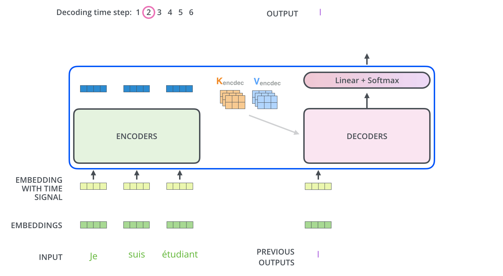
Figure: Decoder block
Such models that predict future values based on past observations under the assumption that the current value is dependent on previous values are called autoregressive models. Autoregressive text generation involves iteratively generating one token at a time, by predicting the next word or token based on the preceding words in the sequence. This approach allows the model to produce coherent and relevant responses by chatbots.
An example of autoregressive text generation is shown in the next figure. For instance, the first generated word by the model is Binge, and given this word, the model assigns probabilities to all possible next words. The considered words shown in the top line in the figure include on, and, of, is, etc. The generated word is drinking. Next, the model considers the words Binge drinking and generates the next word. This process is repeated for the entire output text, where the model takes as input all previously generated words, and generates the next word in the sequence. Note that this process is computationally expensive, since the model needs to repeatedly evaluate all previous words to generate every new word; as a result, inference with autoregressive models requires significant resources and time.
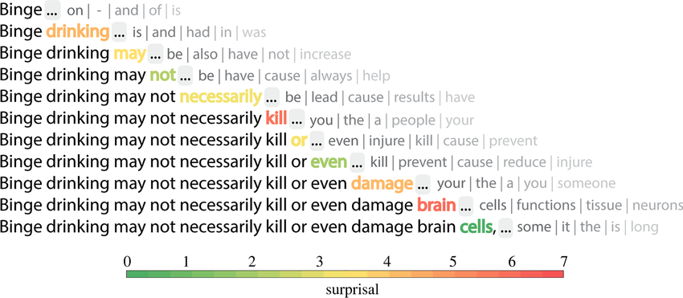
Figure: Autoregressive text generation. Source: [8].
The architecture of the decoder is similar to the encoder and it is shown in the next figure. The upper part of the decoder is practically the same as the encoder, and it consists of a multi-head attention module with residual connections and layer normalization, followed by a feed-forward network with residual connections and layer normalization. The main difference from the encoder is the masked multi-head attention module in the lower part of the decoder. This module is inserted before the multi-head attention module in the decoder. Masked multi-head attention module applies masking to the next words in the target sequence during training, so that the network does not have access to those words. That is, during training, if the model needs to predict the 4th word in a sentence, masks will be applied to all words after the 3rd word, so that the model has access only to the words 1, 2, and 3, in order to predict the 4th word.
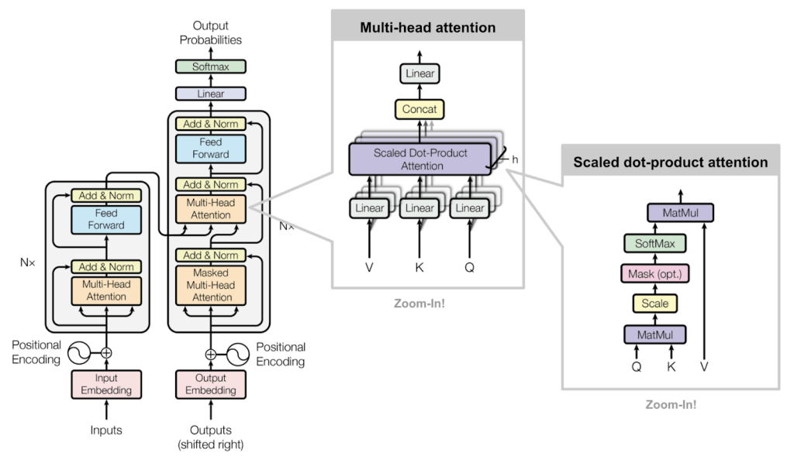
Figure: Transformer Network
For example, in the next figure, for predicting the word with the model has access to the attention coefficients only for the words Your, journey, and starts, whereas the attention coefficients for the words with, one, and step are masked and the model does not have access to those values. This ensures that the model uses only the previous words to predict the next words in the target sequence. This type of mask is referred to as causal attention mask.
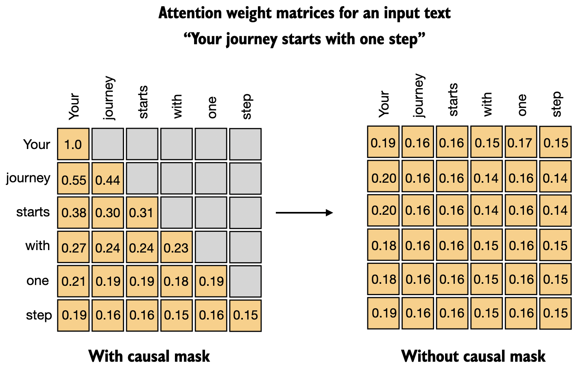
Figure: Causal attention mask. Source: [9].
This also explains why in the figure for the Transformer network inputs to the decoder sub-network are “Outputs (shifted right)”. It is because at each step, the target sequence is shifted to the right and it is fed again into the decoder. E.g., after predicting the 4th word, to predict the 5th word the input to the decoder will be words 1, 2, 3, and 4, and so on.
Finally, the output representations from the decoder are passed to a linear (dense) layer and a softmax layer, that outputs the probability for the next word in the vocabulary learned from the training dataset.
And also note the marks Nx in the figure. They indicate that the shown encoder and decoder blocks are repeated multiple times in the network. In the original Transformer Network, there are 6 encoder blocks, and similarly there are 6 decoder blocks. Introducing multiple blocks in the encoder and decoder sub-networks increases the learning ability as it allows the model to learn more abstract representations.
Note that Recurrent Neural Networks are also a type of seq2seq models. Transformer Networks have several advantages over RNNs, due to the ability to inspect entire text sequences at once, capture context in long sequences, are parallelizable, and are more powerful in general. Conversely, RNNs process sequences step-by-step and maintain a hidden state that summarizes previous tokens. They do not observe the entire sequence at once, and have difficulty finding correlations in long sequences because the information needs to pass through many processing steps. In addition, sequential dependence of RNNs limits parallelism across time steps (are slow to train), and the gradients can become unstable.
19.8 Vision Transformers
After the initial success of Transformer Networks in NLP, they were adapted for computer vision tasks as well. The initial Transformer model for vision tasks proposed in 2021 was called Vision Transformer (ViT).
The architecture of ViT is very similar to the Transformers used in NLP. However, Transformer Networks were designed for working with sequential data, while images are spatial data types. To consider each pixel in an image as a sequential token would be impractical and too time-consuming. Therefore, ViT splits images into a set of smaller image patches (16x16 pixels), and it uses the sequence of image patches as inputs to the model (i.e., each image patch is considered a token). Each image patch is first flattened to one-dimensional vector, and those vectors are afterward passed through a dense layer to learn lower-dimensional embeddings for each patch. Positional embeddings and class embeddings are added, and the sequences are fed to a standard transformer encoder. Class embedding tokens are learned and prepended to the patch sequence, and are used to aggregate sequence information for classification. The encoder block in ViT is identical to the encoder in the original Transformer Network. The steps are depicted in the figure below.
Figure: Vision Transformer
The authors trained 3 versions of ViT, called Base (12 encoder blocks, 768 embeddings dimension, 86M parameters), Large (24 encoder blocks, 1,024 embeddings dimension, 307M parameters), and Huge (32 encoder blocks, 1,280 embeddings dimension, 632M parameters).
Various other versions of vision transformers were introduced afterwards, which include MaxViT (Multi-axis ViT), Swin (Shifted Window ViT), DeiT (Data-efficient image Transformer), T2T-ViT (Token-to-token ViT), and others. These models achieved higher accuracy on many vision tasks in comparison to Convolutional Neural Networks (EffNet, ConvNeXt, NFNet). The following figure shows the accuracy on ImageNet.
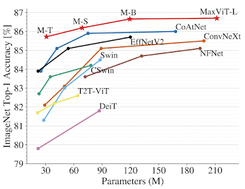
Figure: Accuracy on the ImageNet dataset
References
- The Illustrated Transformer, Jay Alammar, available at: https://jalammar.github.io/illustrated-transformer/.
- Keras Examples, Text classification with Transformer (the model in Section 19.6 is a PyTorch version of this example), available at: https://keras.io/examples/nlp/text_classification_with_transformer/.
- Using Pretrained BERT for Text Classification, Jean de Dieu Nyandwi, available at: https://github.com/Nyandwi/machine_learning_complete/blob/main/9_nlp_with_tensorflow/5_using_pretrained_bert_for_text_classification.ipynb.
- Deep Learning with Python, Francois Chollet, Second Edition, Manning Publications, 2021.
- TensorFlow Tutorials, Neural Machine Translation with a Transformer and Keras, available at https://www.tensorflow.org/text/tutorials/transformer.
- The Transformer Architecture (V2): Understanding LLMs, by Damien Benveniste, available at https://newsletter.theaiedge.io/p/the-transformer-architecture-v2.
- How the Vision Transformer (ViT) Works in 10 Minutes: An Image is Worth 16x16 Words, Nikolas Adaloglou, available at https://theaisummer.com/vision-transformer/.
- Benedetta Cevoli, Chris Watkins and Kathleen Rastle, “Prediction as a basis for skilled reading: insights from modern language models,” The Royal Society 9(6), 2022.
- Building a GPT-Style LLM Classifier From Scratch, Sebastian Raschka, available at https://www.linkedin.com/pulse/building-gpt-style-llm-classifier-from-scratch-sebastian-raschka-phd-itp5c/.
- PyTorch documentation, MultiheadAttention, available at https://docs.pytorch.org/docs/stable/generated/torch.nn.MultiheadAttention.html.
- Learning Word Vectors for Sentiment Analysis (the IMDB dataset), A. Maas et al., ACL 2011, available at https://aclanthology.org/P11-1015/.